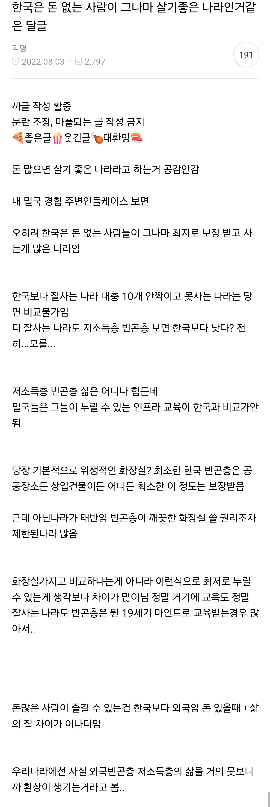

오히려 돈이면 ㄹㅇ 뭐든지 다 되는
미국같은 자본주의 천국에 비하면
부자들 입장에선 좀 돈지랄하면서 즐길거리들 상대적으로 슴슴한데
서민~중산층 입장에선 여러모로 딱 좋은 나라가 한국이라는 느낌

오히려 돈이면 ㄹㅇ 뭐든지 다 되는
미국같은 자본주의 천국에 비하면
부자들 입장에선 좀 돈지랄하면서 즐길거리들 상대적으로 슴슴한데
서민~중산층 입장에선 여러모로 딱 좋은 나라가 한국이라는 느낌
??: 대한민국 법 졸라 사랑해
와인스틴, 앱스타인, 지미 섀빌 : ???
살기 좋음 (임금 체불 world No.1)
저말도 맞고 이말도 맞다
ㅋㅋ 미국 월마트 습격이나 남미 총기사건, 유럽 집시들 소매치기, 난민들 수준보다는 낫지
그거 좀만 검샥해보면 얼수잇는데 일본 미국 등 선진국이랑 집계방식이 달라서 그렇게 보이는게 크고 임금체불에 90%이상이 당해에 처리완료됨.
돈많으면 살기 좋고 중간층도 살기 좋고 최저층도 살기 좋고
그냥 죤나 살기 좋은 나라잖아?
눈을 떴구나
그냥 평균적으로 삶의 난이도가 세계 상위 5% 안에 든다
대한민국이 비교를 버리고 살면 진짜 좋은데
우리나라 국민성이 비교를 그만둘수가 없으니까 ㅎㅎ
그게 한편으로는 고도 성장기를 이끈 원동력이기도 하니까 양날의 검인거지
문제는 다른 나라랑 1:1로 전체 비교를 해서 따져봐야 하는데 이건 여기랑 비교하고 요거는 또 저기랑 비교하고ㅋㅋㅋ 무조건 더 좋은거랑만 비교함
한국인이라면 당연히
경제는 미국과
복지는 북유럽 처럼 되는게 당연한거로 알고 있지 ㅎ
ㅇㅇ 미국에서 서민으로 살면 이 아플 때 치과 못가고 슈퍼마켓에서 파는 진통제 발라서 견뎌야 함
약국가면 이빨에 구멍내서 신경에 넣는 진통제 판대!
어우 시발
한국은 북괴새끼들 때문에 반공을 국시로 내걸긴 했지만 사회발전상 자체가 싱가포르나 북유럽같은 사회-국가주의적인 요소를 강하게 띄고 있어서 작은 정부를 지향하면서도 인프라와 제도 확충에 목숨거는 나라긴 함. 그래서 영미계 자유지상주의 국가들이나 독일을 중심으로 한 사회자유주의 내지는 사회민주주의 국가들과는 다른 의미로 사회제도가 잘 보장되어있음...
민간기업이 아닌 공기업(한전, LH, 코레일, 도로공사 등)과 금융통제(관치금융, 정경유착)를 통해 국가 전략 사업에 민간을 종속시키고 인프라를 깔아왔고, 정부가 직접복지수당을 퍼주는 대신, 공공요금(전기, 가스, 대중교통)을 억눌러 국민의 체감물가를 방어하고 인프라 접근성을 극대화하는 방식은 서구식 자유주의와는 거리가 먼 국가주의적 통제이긴 함.
돈 많으면 살기 좋은 나라는 수도 없이 많겠지.. 굳이 뭐 한국을 ㅋㅋ
저점이 중요한거지
치안같은거 생각하면 그나마 살기 좋은거 맞지않나
일본 : 집 존나 좁고 냉난방 ㅈ되고 교통비 ㅈ됨.
중국 : 나라 겁나 발전했다고 난리지만 저소득층의 저점도 혀를 내두를만큼 달라달라
또 어디랑 비교해야되지
치안은 한중(대도시)일 말고 비교할곳이 딱히 있나
치안이 유지될 수 있는 이유중 하나가 그나마 저점이 높아서임. 해외에서 저점 낮은애들이 밀려들어오는 순간 그 치안 유지도 힘들어지는거고.
일반인 기준 goat긴해
치안 교육 행정 저점이 높고 속도도 빠름
부자들의 삶이 서민이랑 크게 차이가 없음
아파트 골프 해외여행 명품 의료 서민도 다 함
아이달린 돈많은 부자들중 한국에 사는 이유들 보면 대부분 치안과 환경에 대한 이야기를 함. 교육 자체라기보단.
사람 많은곳 피해서
즐기려면 금전이 필요함
할인하고 프로모션 좋으면
주차 테이블 등등 자리없음
저점이 존나 높은건 확실하지. 수급자도 번듯한 생활환경에서 수도 전기 가스 다쓰고의료서비스도 잘 받잖아
버닝썬 앱스타인
앱스타인은 누구누구 거기있었다 대충이라도 공개됨
버닝썬 얼굴마담이나 바지사장만 잠깐 들어감
ㄹㅇ 그럼 숏쳐 마냥
한국 ㅈ같은거같으면
그럼 이민가 시발 ㅋㅋ
왜 굳이굳이 싫다는곳에 그리 징징대며 쳐 살고있음
지 능력에 비해 과분한 대우를 해주는 곳이 대한민국밖에 없으니 여기있는거지
난 맨날 욕하면서도 이 나라를 사랑함
이민자들에겐 선택이겠지만 나에겐 숙명이니까
이민자에게도 모국이 있고, 영향력이 있다는건 크나큰 메리트임
개인적으로 우리나라는 열심히 벌어서 열심히 먹고 사는 중위 소득자들이 제일 그나마 살기 힘든 편인 것 같음
최상위 1%랑 하위 10%는 전세계에서 제일 살기 좋은 편에 속하는데
이 최상위랑 하류 인생들을 89%의 중위 소득자들이 먹여 살리는 ㅋㅋㅋㅋㅋ
물론 우리나라 자체의 체급이 높아지면서
이 89%의 중위 소득자들도 다른 나라에 비하면 상위권인 것은 맞지만 ㅋㅋㅋㅋㅋ
최상위 1% 세계 1~3위, 하위 10% 세계 1~3위, 중위 89% 세계 8~12위 약간 이런 느낌?
대한민국에서 가장 행복한 사람은 돈많은 사람이고
가장 불행한 사람은 돈 많이버는 직장인이고 ㅋㅋ
한국은 욕망 절제하고 낮은 공공요금에 기대서 쌀먹하기에 최적화된 나라지
돈 많다고 살기 좋은 건 아님
미국이나 유럽, 아니 굳이 멀리 갈 필요 없이 바로 옆 일본만 가도 돈만 있으면 고를 수 있는 선택지가 기하급수적으로 많아짐
생산직이대우받는나라인거만봐도
힘들게 살아도 참는 역치가 높은 나라인게 맞는거같음
우리나라처럼 이렇게 아둥바둥 하면서 벼랑끝까지 몰려가며 일하는게 기본 베이스 깔린나라가 몇이나 되겠음
다른나라에서는 존나 일에 미친놈이 우리나라에서는 최소요구사항이니 뭐든지 살기좋을수밖에없을거같음 모두가 존나빡세게 일하니까
어렸을적엔 한국은 구질구질해 보이고 미국유럽은 달라병 걸려서 외국생활도 하고 잠깐이나마 가서 공부도 하고 했었는데,
1. 많이 보면 볼 수록 좃같은 것 없는 이상향이라는건 존재하지 않더라. 특히 삐끗해서 나락 갔을때의 비참함이나 신분의 고착화는 참...왜 이따위지? 싶은 포인트가 없는 나라는 없음.
2. 한국은 앞서 지나간 나라들을 보고 반면교사 삼아 과한건 빼고 덜한건 채워서 나름의 스타일을 구축한거더라. 한국사람들이 바보라서 지금 사회가 이 형태인게 아니더라.
3. 어딜 가든 중요한건 사회를 받아들이는 내 태도랑 발휘할 수 있는 내 능력이랑 내 주변에 어떤 사람들과 같이하냐더라
4. 그래서 결국 사회의 사고방식이 비슷하고 사람 사귀기 좋고 내 능력을 잘 보일 수 있으면서 나락을 가도 다른데보다 덜 비참하고 덜 위험한 곳을 고르니까 대한민국이더라.
경쟁에서 항상 승리하고 카르텔들 깨고 자기 세력 구축할 자신이 있는, 능력 쩔고 에너지 넘치는 사람들이라면 다른 선진국이 나을 수도 있다는건 인정함.
그리고 전세계를 돌아다니면서 사회에 굳이 기대지 않고 자기 영역과 삶을 구축하는 사람들도 존경함.
다만 그렇다고 비슷비슷한, 고만고만한 사람들이라도 모여서 열심히 노력하면 다른 선진국 중상위 그룹 못지 않은 성과와 삶을 누릴 수 있는 한국이 사람 못 살 곳으로 내려치기 당할 곳은 아니라는걸 이야기하고 싶음.
생활 수준은 높은데, 행복 수준은 낮은 나라
사지멀쩡하면 쿠팡가서 1년만 뛰어도 몇천모음.. 3년정도 모으면 1억임
밀국은 어디임? 달글은 뭐임?
미국에서 공부하다 왔고 사모펀드 인턴하면서 돈 많은 애들 꽤 봤는데
우리나라는 하방, 상방 둘 다 막혀있다하면(돈이 엄청엄청 많아도 즐기거나 누릴 수 있는게 크게 없음)
미국은 하방 상방 둘 다 뚫려 있는 느낌임(돈 없으면 진짜 밑바닥이 끝도 없이 떨어지고, 돈 많으면 끝도 없이 올라감)
미국 돈 많은 애들 대표적으로 누릴 수 있는 거
- 개인 제트 비행기 : 땅덩어리 개커서 국내 출장도 비행기 써야되는데 개인 제트로 대기시간 등의 불편함 없이 돌아다닐 수 있음. 작은 공항이나 부자들 위한 개인 제트기 전용 공항도 많아서 효율성 좋음(3천만 달러 정도면 개인용 괜찮은거 구할 수 있고, 찐 부자는 국내용 작은거, 해외용 큰거 가지고 있더라)
- 어정쩡한 거리는 헬기 이동하는 ㅁㅊㄴ도 있음
- 국내 이곳 저곳 별장 사기 : 겨울엔 캘리포니아 부촌 오고(뉴포트비치나 애리조나 스카츠데일도 5-9월 빼면 좋음) 여름엔 하와이 이런데 가있더라
- 요트 파티, 루프탑 파티 등등 돈 쓸 데 많음. 돈 많으면 빅토리아 시크릿 모델 애들까지도 부를 수 있음(어차피 서양은 인맥으로 돌아가는 나라라서 모델들은 돈도 벌고 인맥 쌓으러 오는거임 부작용도 많음). 개인 주택 또는 개인 차고지 지어놓고 자동차, 오토바이 취향 따라 모으기 가능. 시장도 커서 리셀도 활발하고ㅇㅇ 등등이 있더라
거기에 돈까지 많으면 더 좋음